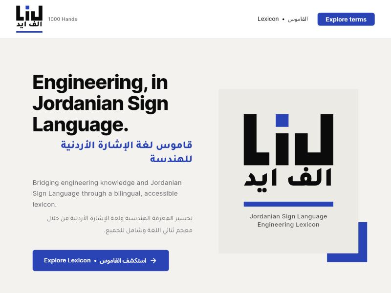
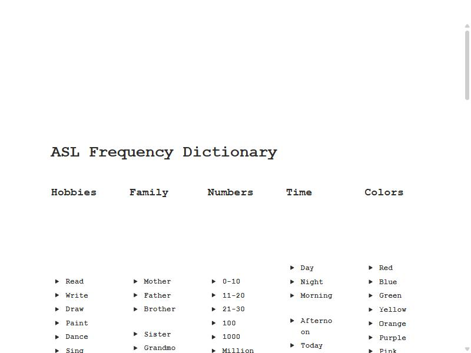

Ongoing
1000 Hands
An initiative teaching university students basic Jordanian Sign Language (JSL).
In progress
LIU, an engineering sign language lexicon
A bilingual web lexicon that pairs engineering concepts with their JSL signs, for Deaf engineering students.

Ongoing
ASL Frequency Dictionary
A small online repository teaching the basics of American Sign Language, to promote accessibility.

Ongoing
Helping students apply to research programs
From cold emails to CVs, statements and recommendation letters. I built
ResApp-Toolkit, an open LaTeX template with a six-page guide. Mentees have been admitted to KAUST VSRP and SESAME, and two more reached interviews.
Ongoing
Study guides for 15+ courses and tools